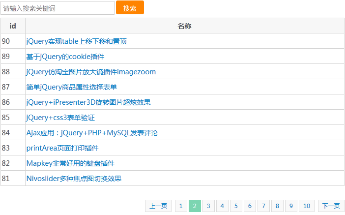

Thinkphp+Ajax带关键词搜索列表无刷新分页实例，两个查询条件，分页和搜索关键字，懂的朋友还可以添加其他分页参数。

搜索#keyword和加载内容区域#ajax_lists
1 <input type="text" class="input" id="keyword" value="" placeholder="请输入搜索关键词"/> <input type="button" class="btn" value="搜索" onclick="getPage(1)" />
2 <div class="content" id="ajax_lists"></div>
3 var url_ajax = "__APP__/Box/orders";
4 $(function() {
5 $("#ajax_lists").delegate(".pager a", "click", function() {
6 var page = $(this).attr("data-page");//获取当前点击分页
7 getPage(page);
8 })
9 getPage(1); //初始化分页
10
11 })
12 function getPage(page) {
13 $("#ajax_lists").html("<div class='loading'><img src='__PUBLIC__/images/loading.gif' alt='loading'></div>");
14 var keyword = $("#keyword").val();
15 $.get(url_ajax, {keyword: keyword, p: page}, function(data) {
16 $('#ajax_lists').html(data);
17 })
18 }
远程ajax加载列表数据
1 public function orders() {
2 $sql = "1=1";
3
4 $keyword = trim(I('get.keyword'));
5 if (!empty($keyword)) {
6 $sql .= " AND name like '%" . $keyword . "%'";
7 }
8 $count = M('js')->where($sql)->count(); //计算总数
9 $Page = new \Think\PageAjax($count, 10);
10 //
11 $lists = M('js')->where($sql)->limit($Page->firstRow . ',' . $Page->listRows)->order('id DESC')->select();
12
13 $this->assign("page", $Page->show());
14 $this->assign("lists", $lists);
15 $this->assign("keyword", $keyword);
16 $this->display();
17 }本文转自：https://www.sucaihuo.com/php/637.html 转载请注明出处！